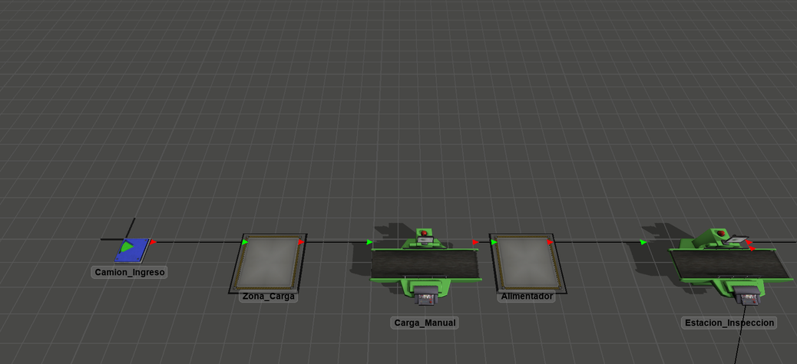
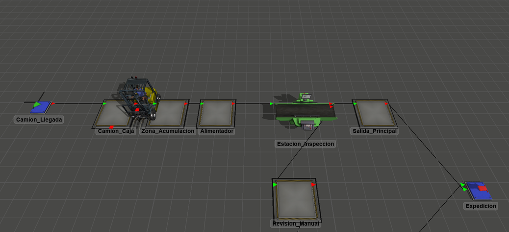
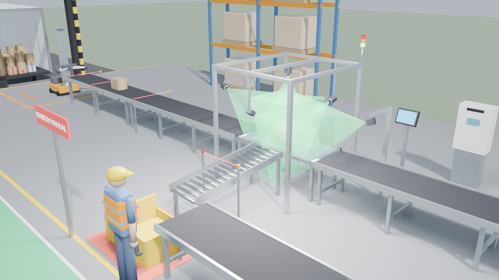
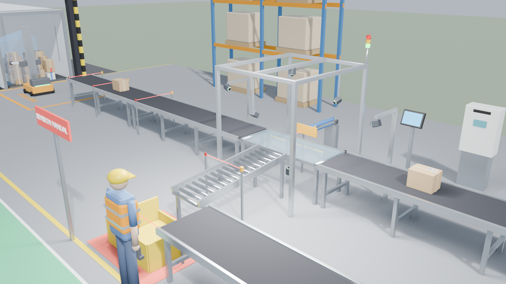
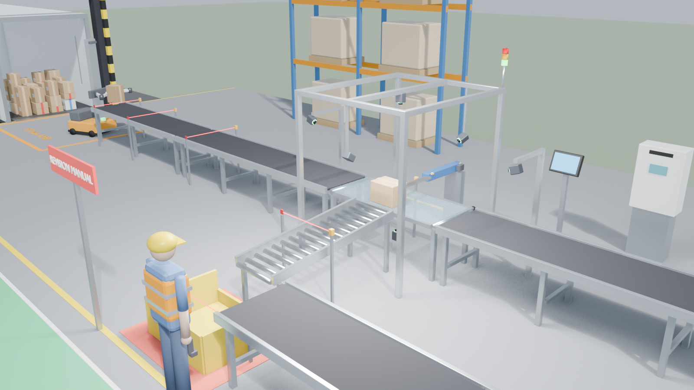
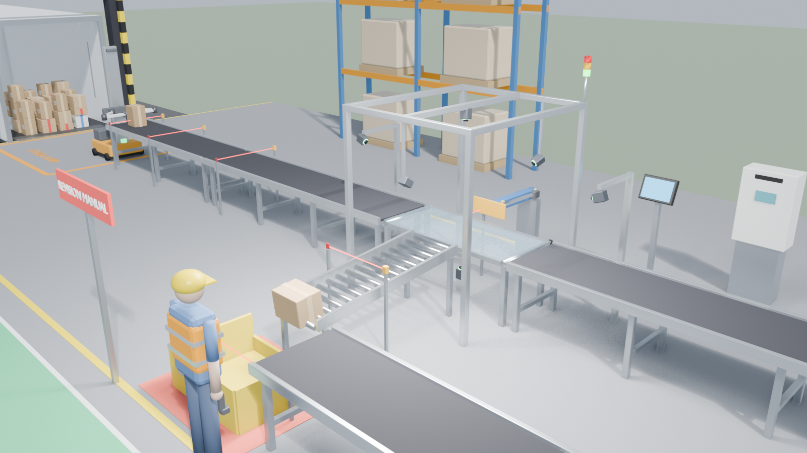
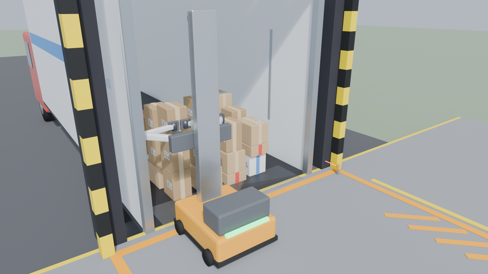
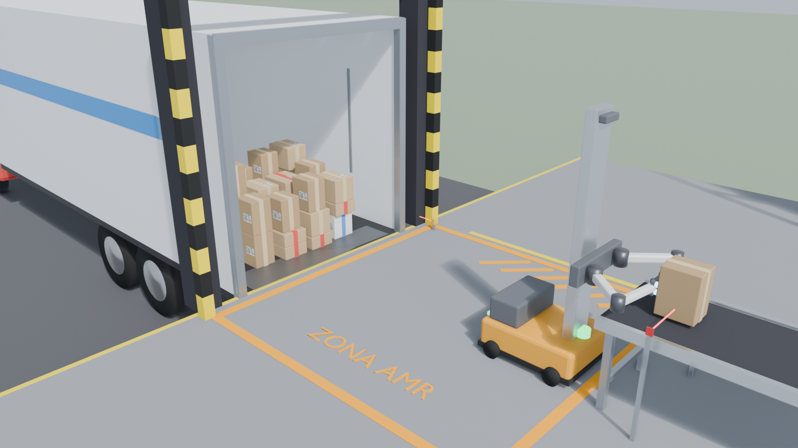
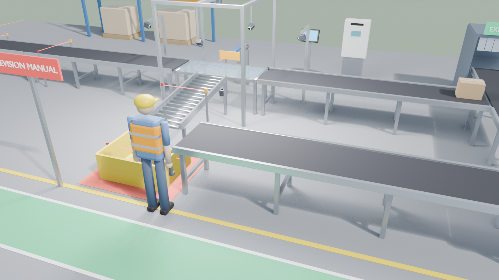
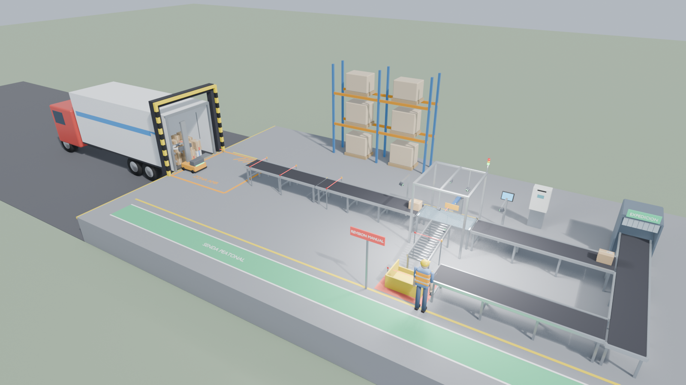

Histórico del proceso
Cada fila conserva fecha y hora (UTC−03:00), ID del ciclo, origen, evento y calidad del dato — sección 15.3 del TPI. Las alarmas registran activación, retorno a normal, reconocimiento y rearme por separado.
| Fecha y hora | ID del ciclo | Origen | Evento o dato | Calidad o validez |
|---|
Secuencia mínima E0–E5 (GRAFCET)
La etapa activa se resalta en vivo. Las transiciones son las de la sección 12.4: un bulto por ciclo, detención en la estación, retención hasta confirmar el registro, y No Read distinto de falla.
- E0 · Esperando bulto Lectores en espera, desviador en reposo, se habilita la recepción. Al reiniciar con un bulto o transacción pendiente se exige intervención.
- E1 · Posicionado e identificando El bulto llega a S_ZONA, se inhibe el alimentador, se pide la parada, el encoder confirma detención y se disparan R1–R6.
- E2 · Registrando Lectura OK: se conserva el código con el ID, se retiene el bulto y se espera la confirmación del ERP para el mismo ID.
- E3 · Derivando a excepción No Read: evento de excepción, VUVG energizada, confirmación S_EXT, paso por S_PASO, retracción y S_RET.
- E4 · Finalizando Alimentador inhibido; si hubo registro se evacua por la línea principal; se confirma estación libre y se cierra el ciclo.
- E5 · Falla / intervención Se inhiben ingresos y avance, se conserva el contexto. Salida: causa corregida, señales coherentes, S_RET, alarma reconocida y rearme deliberado.
Secuencia del AMR (H3: descarga del camión)
Secciones 19 y 20 del TPI. El PLC autoriza cada recogida solo si hay un camión en posición (S_CAMION), la operación está habilitada y hay capacidad en la zona de acumulación. Antes de depositar comprueba que el punto de carga esté libre (S_CARGA). Esperar por capacidad es una condición normal, no una alarma.
- R0 · Esperando autorización Camión en posición, automático habilitado y capacidad en la acumulación (menos de 3 bultos, contando el que lleva el robot).
- R1 · Traslado al camión La base se ubica frente a la columna del bulto y gira fuera del camión, en la zona AMR. El carro elevable sube o baja al nivel del bulto.
- R2 · Localización con visión 3D Identifica el bulto y las caras accesibles para el agarre. Retira de arriba hacia abajo y desde la puerta, para no desestabilizar la carga restante.
- R3 · Aproximación y agarre Entra en línea recta y los dos brazos apoyan sus cabezales multiventosa, lado a lado, sobre la cara frontal (la única accesible en la pared de carga). Activa el vacío y verifica el agarre antes de retirar; si no se verifica, reposiciona y reintenta.
- R4 · Retiro y traslado Sale en línea recta, recoge el bulto cerca del cuerpo, gira en zona libre y lo lleva por encima de la altura de las barandas. Si el lidar detecta una obstrucción, hay detención coordinada y se conserva la sujeción.
- R5 · Depósito Frente a la cinta, sin que la base la toque y con S_CARGA libre, extiende los brazos, apoya el bulto y libera las ventosas.
- R6 · Retorno Vuelve a la posición de espera. Cuando el camión queda vacío, se va y llega el siguiente.
Resultados de la simulación en FlexSim
Modelo flexsim/TracePack_Estacion.fsm, armado y corrido desde el MCP de FlexSim. La estación tiene capacidad 1 y el alimentador admite un solo bulto: así se respeta el interbloqueo “un bulto por ciclo”. Cada escenario se corrió 3 réplicas (semillas 101, 202, 303) de un turno de 8 h.
Escenarios (promedio de 3 réplicas · 8 h)
Corrida base de 1 h (semilla 101): cada ciclo
OK registrado No Read desviado OK con alarma de registro (E5 + intervención)
Parámetros del modelo (Model.parameters)

H3 · Camión + AMR en FlexSim
Modelo flexsim/TracePack_H3_Camion_AMR.fsm. Cada camión trae 36 bultos y el AMR es un Transporter que los lleva del camión a la zona de acumulación (máx. 3). Solo recoge cuando hay lugar, como pide la sección 20. Se compara con una referencia de descarga manual asistida (sección 21). Cada escenario: 3 réplicas de 8 h.
Escenarios H3 (promedio de 3 réplicas · 8 h)
Tiempo de descarga por camión (min)

Arquitectura funcional
Las decisiones de control físico quedan en el PLC; la HMI y el servicio de integración solo intercambian estados, solicitudes y confirmaciones (sección 15.4).
Programa del PLC (S7-1200, SCL)
La secuencia E0–E5 y la autorización del AMR en texto estructurado IEC 61131-3, listas para importar en TIA Portal como fuente externa (plc/TracePack_PLC.scl). Es la misma lógica que corre en la simulación. Los tiempos máximos son los supuestos a validar en la puesta en marcha.
Entradas y salidas (CPU 1214C DC/DC/DC)
FB_Estacion y FB_AutorizacionAMR Descargar .scl
Cargando…
Modelo 3D en Blender
blender/TracePack_Estacion.blend se genera con crear_escena_tracepack.py y se anima con animar_ciclos.py (un ciclo OK y uno No Read, 384 cuadros). Para H3, crear_descarga_amr.py agrega el muelle, el camión, la cinta de acumulación y el AMR, y animar_descarga_amr.py anima la llegada del camión y una recogida completa. La vista 3D de esta página usa el mismo modelo exportado a glTF.







